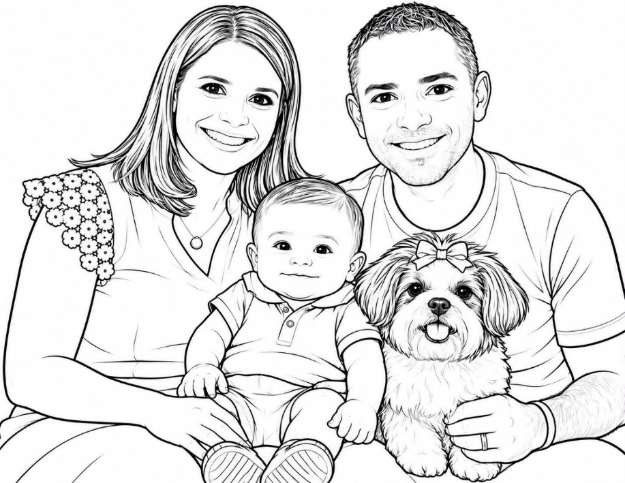
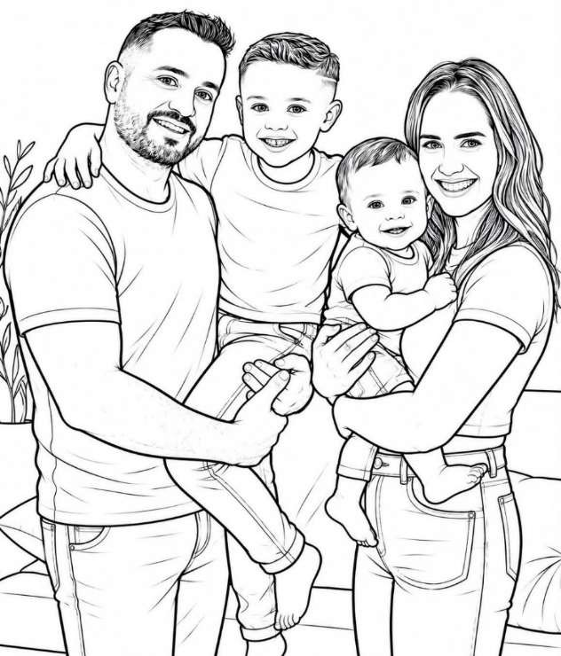

Herança de Família para Letícia, Carlos Eduardo e José Pedro
José Pedro, que este livro seja um tesouro em suas mãos, assim como será para Letícia e Carlos Eduardo. Que suas páginas guardem não apenas os segredos da cozinha de Zelinda, mas também as lembranças, os ensinamentos e o carinho de uma mulher que transformou ingredientes simples em momentos especiais ao redor da mesa.
Que, ao preparar cada receita, vocês possam sentir um pouco da presença da bisa, recordar as histórias vividas em família e descobrir que os sabores mais preciosos são aqueles que carregam afeto e memória.

Porque receitas podem ser copiadas, ingredientes podem ser substituídos e medidas podem ser esquecidas. Mas o amor de uma bisa, esse não se aprende em livros nem se encontra em nenhuma receita. Ele permanece nos gestos, nas lembranças e no coração de cada geração que
teve a felicidade de recebê-lo.
Figura 50 - Receitas têm memórias especiais
Que este legado continue vivo em suas mãos e floresça, por muitos e muitos anos, na história da nossa família.
